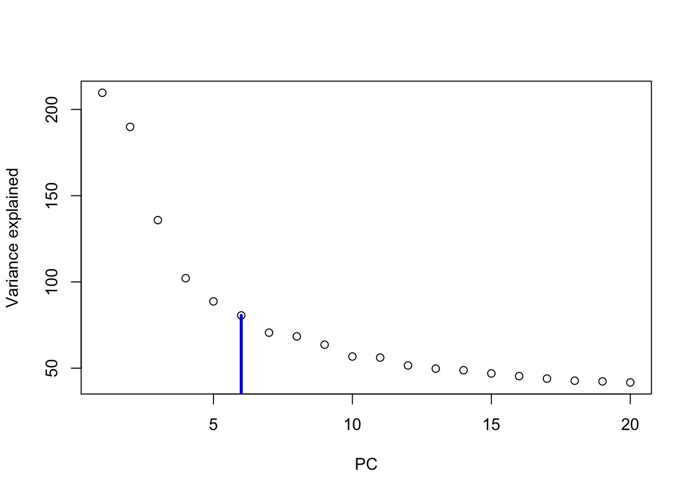
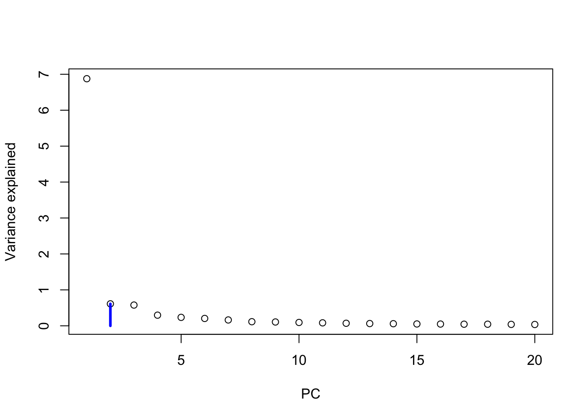
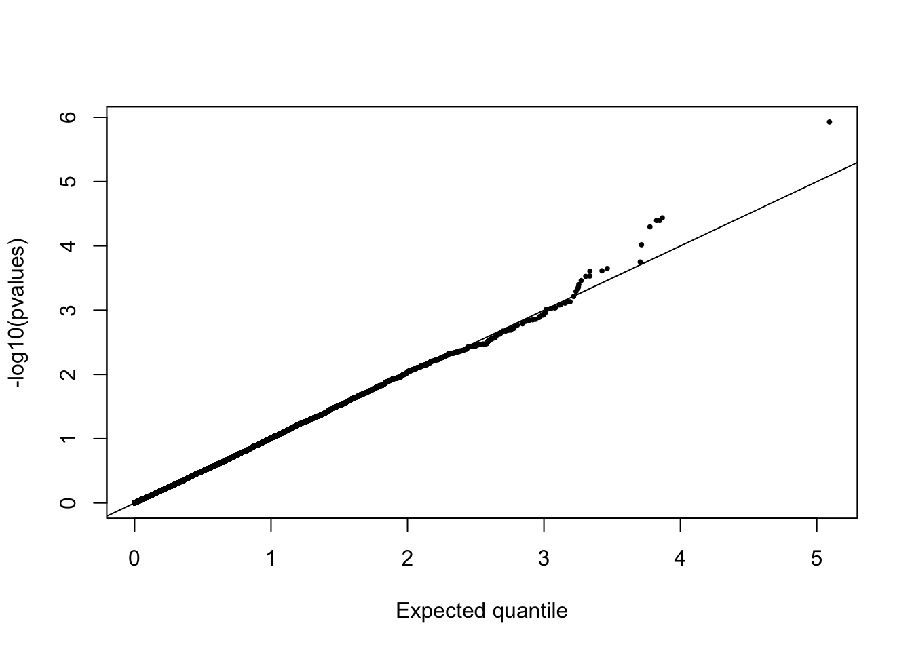
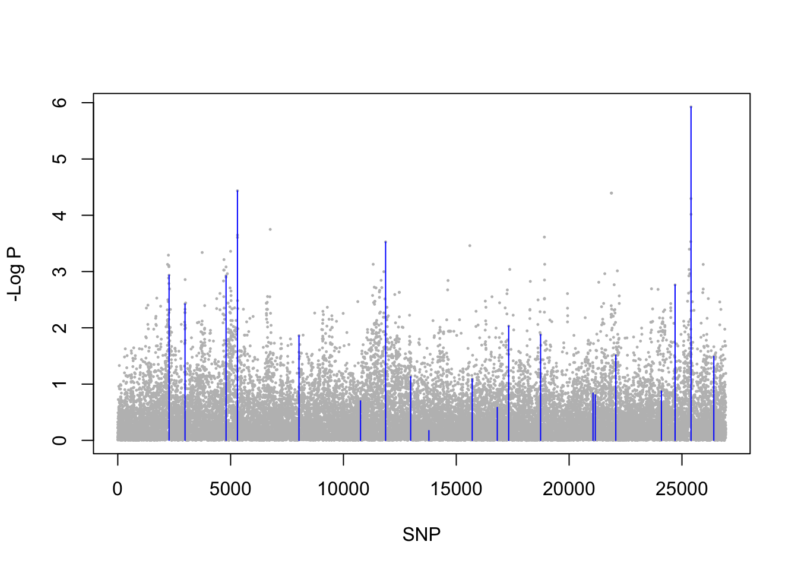
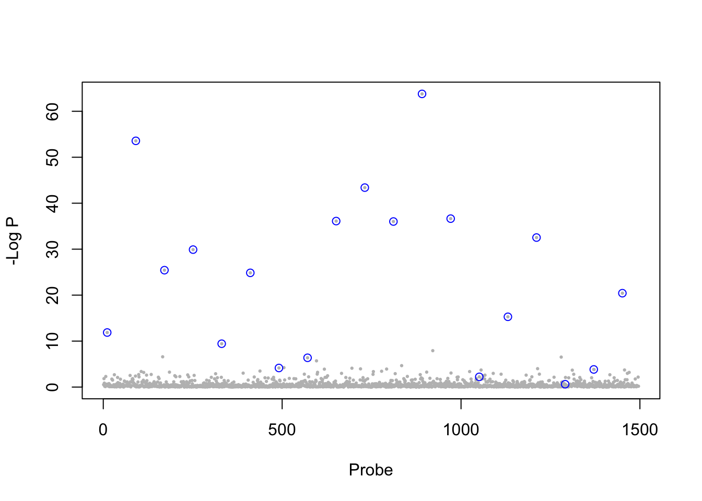
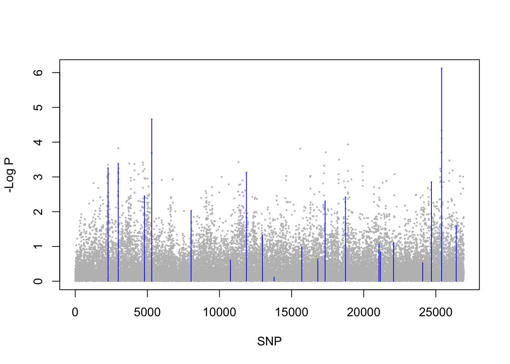
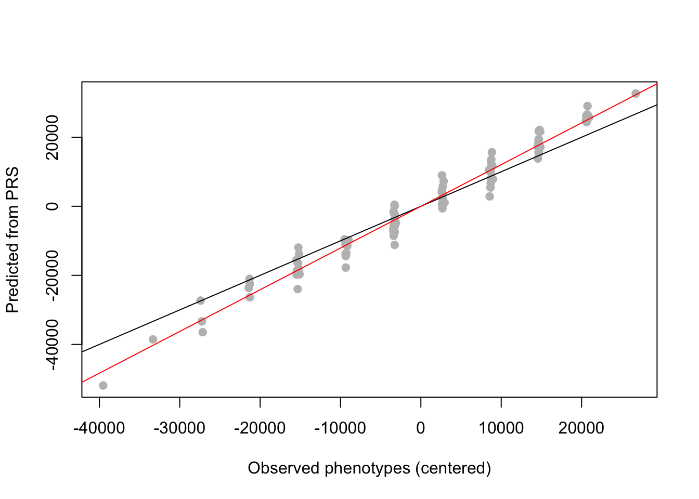
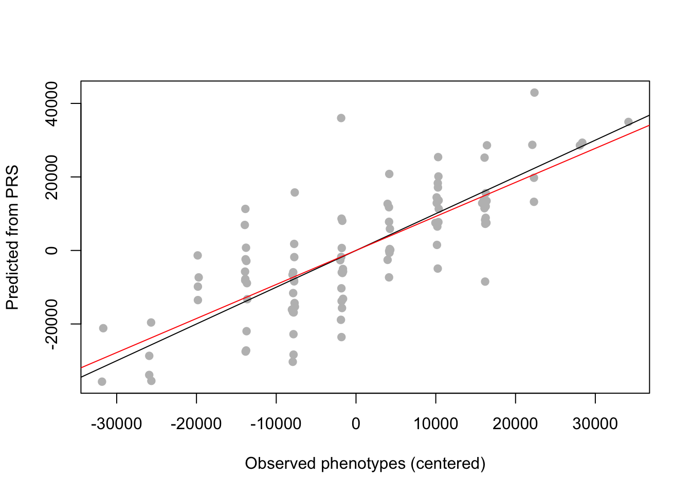

Overview of R Package lfmm
Kevin Caye, Olivier Francois
November 15, 2017
Summary: Genome and epigenome-wide association studies are plagued with the problems of confounding and causality. The R package lfmm implements new algorithms for parameter estimation in latent factor mixed models (LFMM). The algorithms are designed for the correction of unobserved confounders. The new methods are computationally efficient, and provide statistically optimal corrections resulting in improved power and control for false discoveries. This short tutorial provides brief examples on how the R packages lfmm can be used for fitting latent factor mixed models and evaluating association between a response matrix (SNP genotype or methylation levels) and a variable of interest (phenotype or exposure levels) in GWAS, GEAS and EWAS. Corresponding software is available at the following url https://bcm-uga.github.io/lfmm/.
Introduction
LFMMs belong to a broad class of statistical models for association studies including genome-wide association studies (GWAS), epigenome-wide association studies (EWAS), and genome-environment association studies (GEAS) among other. LFMMs were used in (Leek and Storey 2007) in gene expression analysis, and in (Frichot et al. 2013) for testing correlations between loci and environmental. Other implementations of LFMMs are available in the R packages lfmm, LEA (Frichot et al. 2013), sva (Leek and Storey 2007), and cate (Wang et al. 2017).
Latent factor mixed models are statistical regression models to test associations between a multidimensional set of response variables and a set of variables of interest. The response variables can include genotypes, methylation levels, gene expression levels for \(n\) individuals. The explanatory variables can represent environmental exposure or phenotypic traits. LFMMs include unobserved variables, called latent factors, that correct the model for confounding effects due to population structure and other hidden causes. Technically, LFMMs are defined according to the following formula \[ Y = X B^T + U V^T + E \] where \(Y\) is the \(n \times p\) matrix of observations of \(p\) response variables on \(n\) individuals, \(X\) is the \(n \times d\) matrix of explanatory variables measured for the \(n\) individuals, \(B\) is a \(p \times d\) matrix of effects for all explanatory variables, \(U\) is an \(n \times K\) matrix of latent variables (confounders), and \(V\) is a \(p \times d\) matrix of loadings for all latent variables.
To install the latest version of lfmm, use the github repository
#devtools::install_github("bcm-uga/lfmm")Starting with lfmm
The lfmm package can be loaded as follows.
library(lfmm)In this tutorial, we present examples based on two data sets. The examples include simulated data based on single nucleotide polynormphisms for the plant species A. thaliana (Atwell et al. 2011), and on DNA methylation values of nonmalignant skin tissues (Vandiver et al. 2015).
## Simulated phenotypes for Arabidopsis thaliana SNP data
data("example.data")
## Simulated (and real) methylation levels for sun-exposed tissue sampled
data("skin.exposure")For both data set, a principal component analysis (PCA) can reveal some ‘structure’ in the genotypic data. We perfom PCA by using the prcomp function as follows.
Y <- example.data$genotype
pc <- prcomp(Y)
plot(pc$sdev[1:20]^2, xlab = 'PC', ylab = "Variance explained")
points(6,pc$sdev[6]^2, type = "h", lwd = 3, col = "blue")
For the A. thaliana samples, the screeplot indicates that there are around \(K = 6\) main components in the data. We will use \(K = 6\) latent factors in subsequent analyses of the A. thaliana example.
Y <- skin.exposure$beta.value
pc <- prcomp(Y)
plot(pc$sdev[1:20]^2, xlab = 'PC', ylab = "Variance explained")
points(2,pc$sdev[2]^2, type = "h", lwd = 3, col = "blue")
For the sun-exposed skin tissue samples, the screeplot indicates that there are around \(K = 2\) main components in the data. We will use \(K = 2\) latent factors in subsequent analyses of the skin tissue example.
LFMM ridge estimates
The R package contains two main functions for estimating the parameters of LFMMs: ridge_lfmm and lasso_lfmm. The ridge estimates are based on minimimizing a regularized least-squares problem with an \(L_2\) penalty. The next steps illustrate the use of the ridge_lfmm function for the A. thaliana example.
Ridge estimates and GWAS tests for the A.thaliana example
Y <- example.data$genotype
X <- example.data$phenotype #scaled phenotypeThe ridge_lfmm function is applied to \(Y\) (genotype) and \(X\) (phenotypes, SD = 1).
## Fit an LFMM, i.e, compute B, U, V estimates
mod.lfmm <- lfmm_ridge(Y = Y,
X = X,
K = 6)The ridge_lfmm function returns an object that contains the latent variable score matrix \(U\), the latent variable loading matrix \(U\), and \(B\) the effect sizes for all SNPs. The result can be used to perform an association study:
## performs association testing using the fitted model:
pv <- lfmm_test(Y = Y,
X = X,
lfmm = mod.lfmm,
calibrate = "gif")The histogram of test significance values is expected to be flat, with a peak near zero. A QQ-plot is displayed as follows.
pvalues <- pv$calibrated.pvalue
qqplot(rexp(length(pvalues), rate = log(10)),
-log10(pvalues), xlab = "Expected quantile",
pch = 19, cex = .4)
abline(0,1)
A Manhattan plot can be shown as follows.
## Manhattan plot
plot(-log10(pvalues),
pch = 19,
cex = .2,
xlab = "SNP", ylab = "-Log P",
col = "grey")
points(example.data$causal.set,
-log10(pvalues)[example.data$causal.set],
type = "h",
col = "blue")
The vertical bars indicate the position of the (known) causal loci used to generate the simulated phenotypes.
Ridge estimates and EWAS tests for the skin exposure example
The skin exposure data set contains (partially simulated) DNA methylation data. The data are loaded as follows.
Y <- scale(skin.exposure$beta.value)
X <- scale(as.numeric(skin.exposure$exposure))An LFMM model is fitted to the epigenomic data with \(K=2\) latent factors, and an EWAS is performed for the sun exposure variable.
## Fit and LFMM, i.e, compute B, U, V estimates
mod.lfmm <- lfmm_ridge(Y = Y,
X = X,
K = 2)
## Perform association testing using the fitted model:
pv <- lfmm_test(Y = Y,
X = X,
lfmm = mod.lfmm,
calibrate = "gif") ## Manhattan plot
plot(-log10(pv$calibrated.pvalue),
pch = 19,
cex = .3,
xlab = "Probe", ylab = "-Log P",
col = "grey")
causal.set <- seq(11, 1496, by = 80)
points(causal.set,
-log10(pv$calibrated.pvalue)[causal.set],
col = "blue")
The blue circles represent the CpG sites which were causally associated with the variable of interest.
Lasso estimates
The lasso estimates are based on minimizing a regularized least-squares problem with an \(L_1\) penalty. The \(L_1\) norm is introduced for inducing sparsity on the fixed effects, and corresponds to the prior information that not all response variables may be associated with the variables of interest. More specifically, the prior implies that a limited number of rows of the effect size matrix \(B\) are effectively non-zero. The next steps illustrate the use of the lasso_lfmm function on the A. thaliana example.
Lasso estimates et GWAS tests for the A.thaliana example
Y <- example.data$genotype
X <- example.data$phenotype #scaled phenotypeThe lasso_lfmm function is applied to \(Y\) (genotype) and \(X\) (phenotypes, SD = 1).
## Fit an LFMM, i.e, compute B, U, V estimates
mod.lfmm <- lfmm_lasso(Y = Y,
X = X,
K = 6,
nozero.prop = 0.01)The ridge_lasso function returns an object that contains the latent variable score matrix \(U\), the latent variable loading matrix \(U\), and \(B\) the effect sizes for all SNPs. The result can be used to perform a GWAS as follows
## performs association testing using the fitted model:
pv <- lfmm_test(Y = Y,
X = X,
lfmm = mod.lfmm,
calibrate = "gif")The histogram of test significance values is expected to be flat, with a peak near zero. A QQ-plot is displayed as follows.
pvalues <- pv$calibrated.pvalue
qqplot(rexp(length(pvalues), rate = log(10)),
-log10(pvalues), xlab = "Expected quantile",
pch = 19, cex = .4)
abline(0,1)
The Lasso estimates lead to more liberal tests than with the ridge estimates. Here are the results in a Manhattan plot showing the causal set of loci.
## Manhattan plot
plot(-log10(pvalues),
pch = 19,
cex = .2,
xlab = "SNP", ylab = "-Log P",
col = "grey")
points(example.data$causal.set,
-log10(pvalues)[example.data$causal.set],
type = "h",
col = "blue")
Prediction of phenotypic values with polygenic risk scores
We implemented a simple procedure to compute polygenic risk scores from LFMM estimate using the function effect_size, which takes an lfmm object in argument.
Consider a simulation of 1000 genotypes for 100 individuals (\(Y\) matrix) with 2 latent factors, and known effect sizes.
## Simulation of 1000 genotypes for 100 individuals (y)
u <- matrix(rnorm(300, sd = 1), nrow = 100, ncol = 2)
v <- matrix(rnorm(3000, sd = 2), nrow = 2, ncol = 1000)
y <- matrix(rbinom(100000, size = 2,
prob = 1/(1 + exp(-0.3*(u%*%v
+ rnorm(100000, sd = 2))))),
nrow = 100,
ncol = 1000)
## Simulation of 1000 phenotypes (x)
## Only the last 10 genotypes have significant effect sizes (b)
b <- matrix(c(rep(0, 990), rep(6000, 10)))
x <- y%*%b + rnorm(100, sd = 100)Now, compute direct effect sizes using the lfmm_ridge function
mod <- lfmm_ridge(Y = y,
X = x,
K = 2)When the candidate list is known, indirect effect sized and PRS can be predicted using the effect_size function. For example,
candidates <- 991:1000 #causal loci
b.values <- effect_size(Y = y, X = x, lfmm.object = mod)
x.pred <- scale(y[,candidates], scale = F)%*% matrix(b.values[candidates])Compare the results with the observed values.
##Compare simulated and predicted/fitted phenotypes
plot(x - mean(x), x.pred,
pch = 19, col = "grey",
xlab = "Observed phenotypes (centered)",
ylab = "Predicted from PRS")
abline(0,1)
abline(lm(x.pred ~ scale(x, scale = FALSE)), col = 2)
Note that the function predict_lfmm takes an lfmm object and an expect level of false discovery rate (FDR)in arguments. The FDR level is used to define candidates on which the PRS are computed.
pred <- predict_lfmm(Y = y,
X = x,
fdr.level = 0.25,
mod)
##Compare simulated and predicted/fitted phenotypes
plot(x - mean(x), pred$pred,
pch = 19, col = "grey",
xlab = "Observed phenotypes (centered)",
ylab = "Predicted from PRS")
abline(0,1)
abline(lm(pred$pred ~ scale(x, scale = FALSE)), col = 2)
References
Vandiver, A. R. et al. (2015). Age and sun exposure-related widespread genomic blocks of hypomethylation in nonmalignant skin. Genome Biology, 16 16-80.
Leek, J. T., Storey, J. D. (2007). Capturing heterogeneity in gene expression studies by surrogate variable analysis. PLoS Genetics, 3 e161.
Frichot, E., Schoville, S. D., Bouchard, G., Francois, O. (2013). Testing for associations between loci and environmental gradients using latent factor mixed models. Molecular Biology and Evolution, 30 1687-1699.
Wang, J., Zhao, Q., Hastie, T., Owen, A.B. (2017). Confounder adjustment in multiple hypothesis testing. The Annals of Statistics, 45 1863-1894.